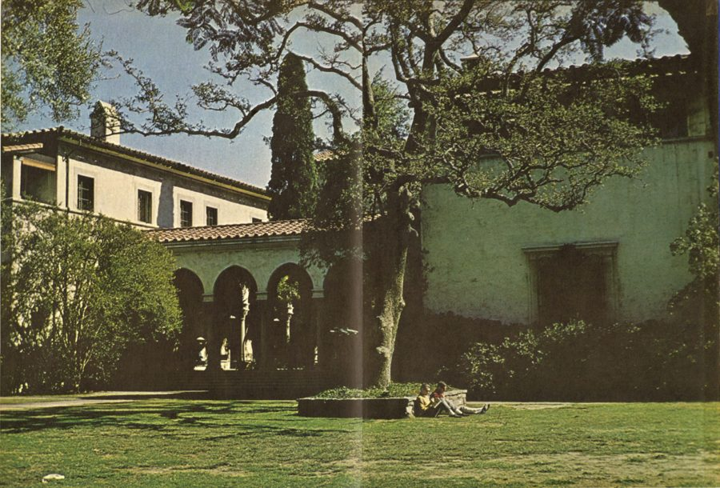
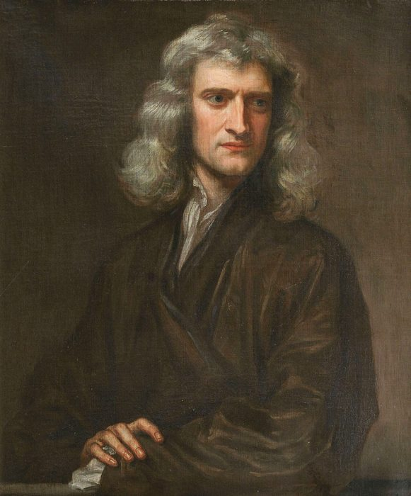
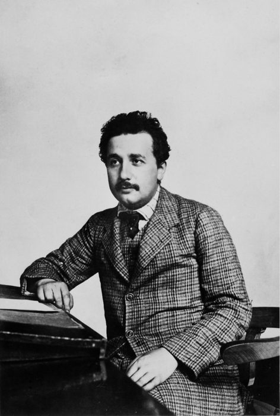

这一章在做什么
短章，几乎全是对话，物理很少。作者读着施瓦茨的文章，心里没底：该不该做一个几乎人人都说是胡扯的理论？周六他在校园里碰到费曼，两人边走边聊，最后走到一场婚宴跟前。
费曼的回答只有一两句，要读慢一点；后半段蹭饭的戏，看的是费曼怎么对待「规矩」。

加州理工的 Athenaeum（教员俱乐部），1966 年。这一章的后半段发生在它的院子里。
作者不详，公有领域，维基共享资源 背景：作者默认你知道的事
Athenaeum 和 the Greasy
Athenaeum 内部的一间厅，2020 年。木墙板、彩绘天花板、厚窗帘，和学生食堂是两个世界。
Antony-22，CC BY-SA 4.0，维基共享资源 校园里吃饭的两个地方，前面都出现过。Athenaeum 是教员俱乐部（第 3 章），讲究，盖尔曼爱去，也有人在这里办婚礼。the Greasy 是食堂的外号（第 5 章），greasy 是「油腻腻的」，费曼爱去。
两处周末都不开门，所以作者周六过了中午还找不到东西吃。
美国婚礼：reception 和「你是哪边的」
仪式上：宾客分坐两边
新人
新娘的亲友
bride’s side
新郎的亲友
groom’s side
中间是过道
宴会上：陌生人这样搭话
Bride’s side or groom’s?
你是女方的客人，还是男方的？
Neither.
哪边都不是。（费曼）
正常的答案只有两个
答「都不是」等于承认没被邀请
本站示意图。这句问话相当于中文婚宴上的「您是男方还是女方的亲戚？」
美国婚礼一般分两段：先是仪式（ceremony），然后是宴会（reception），有吃有喝。仪式上宾客按是谁的亲友分坐过道两边，所以客人之间互不认识时，开口就问「哪边的」。
tuxedo 是男士的正式晚礼服，穿它的人多半是婚礼的正经参加者。
二十几岁做出的发现

牛顿，1689 年的肖像。画这幅画时他四十多岁，微积分是二十多年前的事了。
Godfrey Kneller，公有领域，维基共享资源 
爱因斯坦在伯尔尼专利局，1904 或 1905 年。狭义相对论就是这时候做出来的。
Lucien Chavan，公有领域，维基共享资源
牛顿
爱因斯坦
费曼
微积分，1665–1666
狭义相对论，1905
费曼图，1948 前后
20 岁
25 岁
30 岁
35 岁
本站示意图。第 16 段举的三个例子，横轴是做出发现时的年龄。作者这时也是二十多岁。
物理圈有个老说法：理论物理是年轻人的行当，过了三十就走下坡路。作者和同学们一直这么信。费曼在这一章给了另一种解释：不是脑子变慢了，是学进去的东西太多，把人框住了。
词与短语
词条按在书里出现的顺序排。斜体小字是它所在的那句话里的几个词，方便你在纸质书上找到。
get a handle on
… GET a handle on the articles …
摸到门道，弄懂
handle 是把手：抓得住才拿得动。
find myself able to
… least I found myself finally able …
发现自己总算能……了
find oneself + 状态 ：不知不觉处在某种状态。前几章他一直静不下心。
dubious reputation
… despite the dubious reputation of Schwarz …
不怎么好的名声
dubious = 让人起疑的。
work under
… graduate students working under him, more …
在……手下做研究，跟着他读
sane
… They seemed sane. Didn’t they realize …
神志正常
反义词 insane（疯的）。前一句的 capable 是「有能力」。
crackpot
… thought they were all crackpots …
想法离谱的怪人，民科
字面是「裂了的罐子」。注意前面 “experts” 带引号：作者对这些「专家」也不全服气。
go astray
… many students to go “astray” like …
走上歧途
引号表示这是别人的看法。
well past noon
… But this was well past noon, and …
早就过了中午
well 修饰介词短语 = 远远地。过了中午才「饿着要吃早饭」，说明他刚起床。
the Greasy
… both the Greasy and the Athenaeum …
「油腻馆」，学生食堂的外号
见上面背景。
figure
… I figured they must eat somewhere …
心想，估计
美式口语，= think。they 指住校的学生。
road kill
… in search of road kill, or …
公路上被车轧死的动物
玩笑：饿得连这个都行。不是真去找。
vending machine
… or maybe a vending machine. I …
自动售货机
spot
… I spotted Feynman a short distance …
一眼看见
动词。名词才是「斑点、地点」。
bump into
… the opportunity to “bump” into him …
碰巧遇上
bump 带引号：他是故意凑上去的，装作偶遇。
Make any discoveries yet?
… Make any discoveries yet?” he said …
有什么发现了没有？
口语省了开头的 Did you 。下一段的 You know where I can eat? 省了 Do 。
lie in
… The difficulty lies in the ‘when.’ …
（问题）在于
lie 是「位于」。费曼在玩文字：你问 where，可难处在 when。
Weekends, …
… Weekends, the usual places on campus …
一到周末，……
口语里省了 On 。
head
… were heading in the direction of …
朝……走去
动词。第 29 段还有 We headed to the buffet 。
chuckle
… He chuckled. “Maybe if you knew …
轻声笑
不出声或低声的笑，带点得意。
know better
… I’m too dumb to know better …
明白事理（因而不会去做傻事）
too dumb to know better = 笨到不知道这事不该碰。dumb 是口语「笨」。
spoiled
… to be spoiled by what you know …
被惯坏，被带偏
spoil 本义是「弄坏」，a spoiled child 是惯坏的孩子。这里：被已有的知识弄得不会用新眼光看问题。
kids
… were made by “kids” who were …
年轻人，小年轻
带引号：二十多岁当然不是小孩，是相对老教授说的。
calculus
… at which Newton invented calculus, Einstein …
微积分
diagram technique
… Feynman developed his diagram technique …
（费曼的）图解方法，即费曼图
at their peak
… our minds were at their peak …
处在巅峰
前面的 brainpower = 脑力。
go downhill
… as if we go downhill not …
走下坡路，越来越不行
brainwashing
… some kind of brainwashing. Maybe that’s …
洗脑
这个英文词本来就是从中文「洗脑」直译过去的。
derive
… insisting on deriving new results himself …
（从头）推导
数理用语。别人的结果他不看论文，自己重新推一遍。
a beginner’s outlook
… to retain a beginner’s outlook …
初学者的眼光
retain = 保持住。outlook = 看事情的角度。
buffet
… a big buffet in the Athenaeum …
自助餐台
法语来的词，读 /bəˈfeɪ/，t 不发音。courtyard = 院子。
wedding reception
… be a wedding reception going on …
婚宴
reception 这里不是「前台」。going on = 正在进行。
an expert in etiquette
… you are an expert in etiquette …
礼仪专家
反话：你可真懂规矩。etiquette 读 /ˈetɪket/。
not that hungry
… guess you aren’t that hungry …
没那么饿
that 作副词 = so。激将：真饿就不会讲究有没有请帖。
not exactly
… we’re not exactly dressed for it …
实在算不上
委婉的说法，实际意思是「完全不是」。dressed for it = 穿得合场合。
dress shirt and slacks
… on a dress shirt and slacks …
正装衬衫和西裤
dress shirt 是配西装的那种衬衫，和裙子无关。slacks 是不成套的长裤。had on = 穿着。
clad in
… I was clad in shorts and …
穿着
书面词，故意用得隆重，配的却是短裤和 T 恤。
What scientist …?
… What scientist goes to work looking …
哪有科学家会……？
反问句，意思是「没有」。
look on
… He looked on as I started …
在一旁看着
不是「看上去」。他自己没拿，看作者往盘子里堆（loading my plate ）。
tuxedo
… a man in a tuxedo came up …
男式晚礼服
came up behind us in line = 排到了我们后面。
Bride’s side or groom’s?
… Bride’s side or groom’s?” the man …
女方的客人还是男方的？
bride 新娘，groom 新郎。见上面背景。
look someone up and down
… The man looked us up and down …
从头到脚打量
my mind raced
… My mind raced, searching for a …
脑子飞快地转
race 作动词是「飞奔」。
attire
… either the answer or our attire …
衣着
正式的词。unbothered = 毫不在意。
值得停下来的句子
Maybe you just don’t know enough, or haven’t known it long enough, to be spoiled by what you know.
— 第 15 段，费曼。本站译：也许你只是懂得还不够多，或者懂的时间还不够长，还没被自己懂的东西惯坏。
骨架是 not … enough to be spoiled ：还没到被惯坏的程度。中间插了一个 or haven’t known it long enough ，所以 enough 出现了两次，两个都接后面的 to be spoiled 。
容易读反：这句不是在说作者无知，是在说「无知」这时候反倒是好处。全章要记的就是这一句。
What scientist goes to work looking like he’s dressed for a wedding? Well, other than Murray.
— 第 27 段，费曼。本站译：哪个科学家上班穿得像去参加婚礼？嗯，默里除外。
前半句是反问，后半句顺手刺了盖尔曼一下。前面几章说过，盖尔曼讲究穿着，常去 Athenaeum。Well, 是说话人想了一下再补充的口气；other than = 除了。
检查一下理解
先在心里答，再点开。答错的那题，回书里把对应段落再读一遍。
1. 作者说自己 "in search of road kill"。他真的去找被车轧死的动物了吗？
没有，是自嘲的夸张：饿到什么都肯吃。同一句里的 vending machine（自动售货机）才是他真正指望的。
2. 第 3 段的 "bump" 为什么带引号？
bump into 是「偶然碰上」。加引号表示并不偶然：他看见费曼在不远处，是故意走过去装作碰巧遇到的，因为他正有问题想问。
3. 费曼说，什么条件下可以去做一个别人都认为是胡扯的理论？
只有一个条件：你自己不认为它是胡扯。他没有评价弦理论对不对，也没说别人的看法重不重要，只把判断交回给作者自己。
4. 费曼说，要是懂得够多，"you wouldn’t work on it, either"。他是在笑作者无知吗？
不是。作者自己接了一句「你是说我太笨」，费曼马上否认。他的意思是：懂得多的人会被已有的知识框住，不敢碰这种理论；懂得还不多，有时反而是优势。
5. "I see you are an expert in etiquette." 是夸奖吗？
是挖苦。作者说「可惜我们没被邀请」，费曼就笑他太守规矩，接着反问：没被邀请就等于不受欢迎吗？后面那句「看来你没那么饿」是同一个意思的激将。
6. 费曼说 "We represent the physics department"，那个人什么反应？
他笑了笑，拿了点沙拉走开了，对答案和两人的穿着都不在意。作者正慌着想编个谎，费曼没编谎，直接认了「哪边都不是」，再补一句半开玩笑的话，说得理直气壮。作者担心的尴尬根本没有发生。